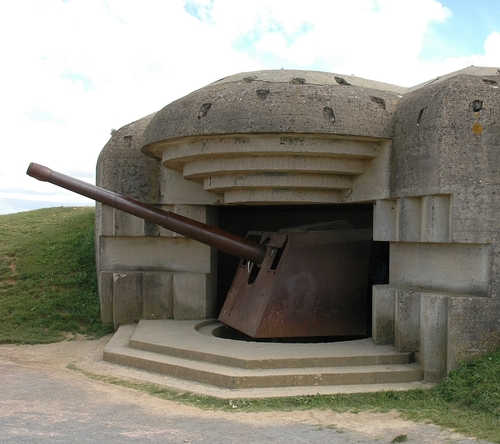

home
trips
form
contact
info

German Bunkers
German bunkers Normandië info:
Explanation:
A wonderful journey through the old German bunkers of Normandië. The bunkers used by the Germans on D-Day.
A real trip for people with agoraphobia and for good history vagnates . A trip through the old bunkers and after the trip overnight in the bunker itself.
The journey: You start on the beach of Normandië where D-Day began. Where many people have fallen to the bunkers and the machine guns. But was an important beginning of the tilt of the war.
From the beach we start with the tour. We're going to go through the bunkers and we can see them from the inside out.
After our tour we will spend a night in the bunker with the group. And because it's inside it can work against agrophobia it's a good start to get rid of it. A journey through history.
Amenities:
Good shoes
A thick coat for possibly the cold
water
Snacks (own option)
A sleeping bag
A pillow
Some necessary medical needs